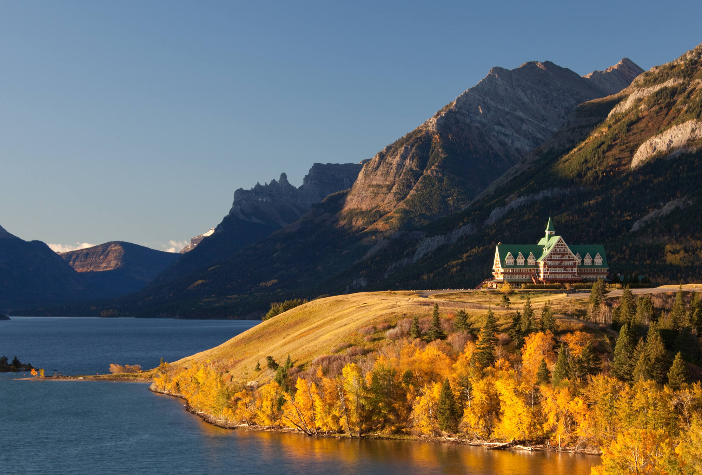

Chess is one of my favourite strategy games, due to it involving prior thought for every move. I like the thought required to play the game effectively.

Common strategies in Chess include:
Waterton is one of my favourite places in Alberta. It has beautiful scenery and mountains for hiking year-round. I appreciate the natural beauty of this natural park.
Burgers are my favourite food due to their variety and taste. I appreciate the effort it takes to create them, as well as their simplicity.